9. 其它构造物的设计
关于其它构造物的设计，知识有限，无法详细说明，所以大家可以自行研究一下。
桥梁设计
这里的桥梁设计只能标注桥梁位置，无法设计桥梁细部构造。
虽然说路桥不分家，不过对于个人来说，这个路桥两部分的知识有点庞大，除非在路桥工作有些年限，否则仅凭书本这点内容，是没法掌握那么多的，笔者是道路与桥梁专业主修道路，故而桥梁部分的内容谈不上教学，只能给大家讲软件操作，输入填入的方法，至于设计桥梁，需要大家自己去查阅资料了。
下面是软件的操作：
点击数据-控制参数输入
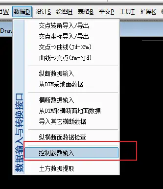
弹出窗口，选择桥梁：
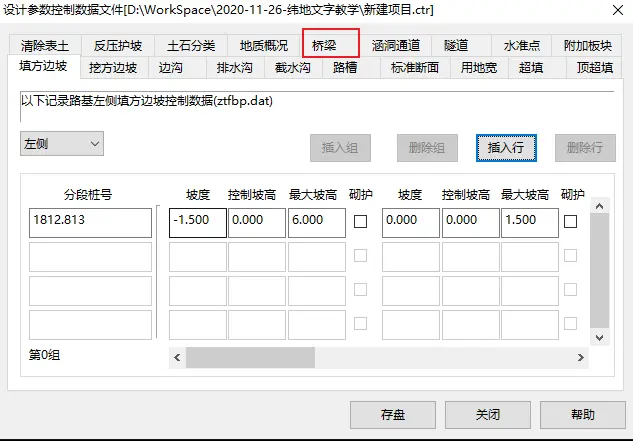
点击插入：
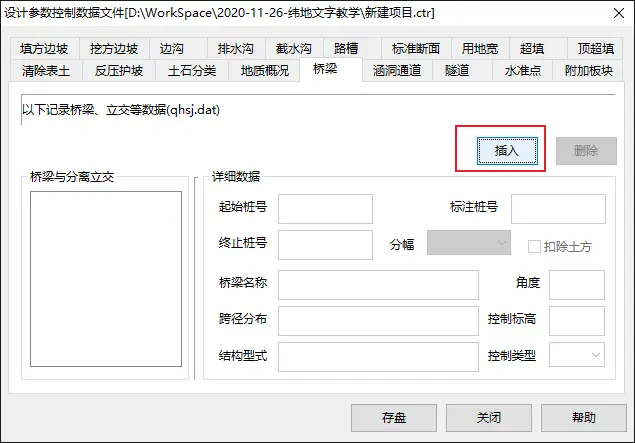
选中刚才新建的桥梁，输入起始桩号和各部分的桥梁名称：
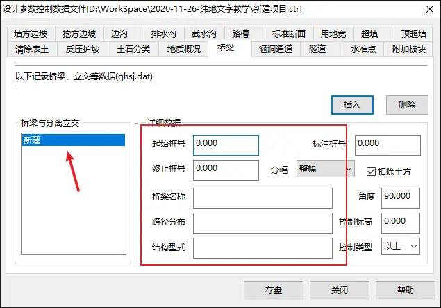
这里填写桥梁设计的位置，一般过河、农田、即其它地质不稳定的地方，都可以设计桥梁。
桥梁桩号
这里桥位的选择与地形图有关，而且这里也只是标注位置，就不一一详说。
桥梁名称
名称随便写一个，比如可以按功能、结构等来命名，比如从 XX 到 XX 桥、预应力混凝土 xxx 桥
跨径分布
“2*25m”形式填入
前面的数字 2 表示跨数，即 2 跨
25m 代表单独一跨的长度，即每一跨有 25m。这座桥总长 50m。
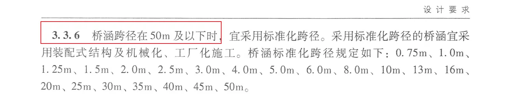
关于跨径的选择，请大家查询《公路桥涵设计通用规范》JTG D60-2015。
结构型式
板桥、梁桥、钢结构桥。
填写完成之后，点击存盘
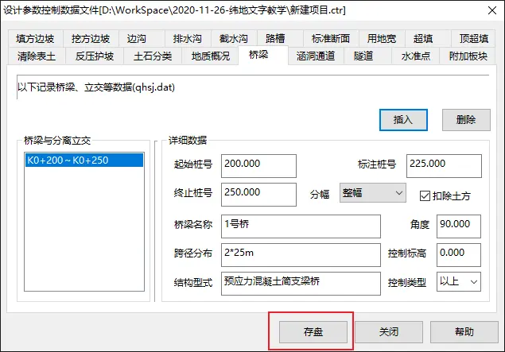
涵洞设计
同样在控制参数输入里进行，点击涵洞通道-插入：
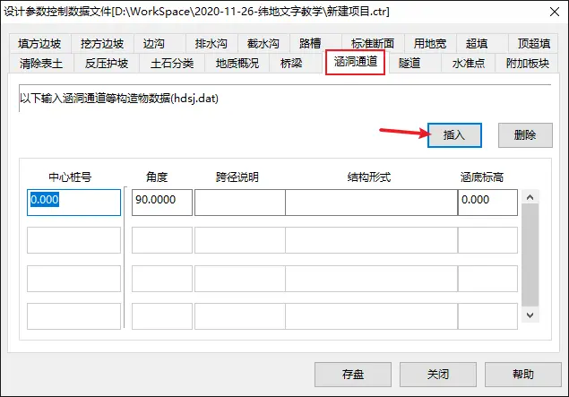
中心桩号
填写涵洞的中心桩号
角度
默认正交，即 90 度。
跨径说明
盖板涵:1-2.5×4m
1 跨，盖板涵界面尺寸。
圆管涵:1-Φ1.5m
1 跨，圆管涵界面半径。
结构型式
注释说明该跨径是哪种涵洞型式。下图来自《公路涵洞设计细则》JTGT D65-04-2007
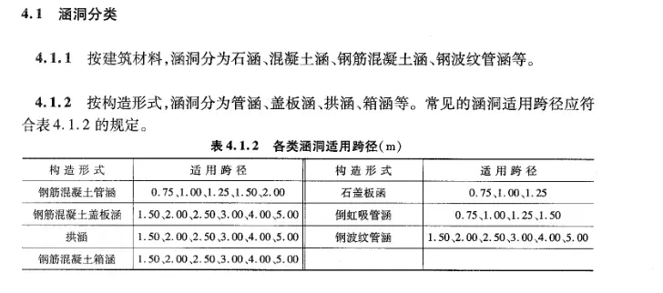
更多详细设计请自行查阅资料。
挡土墙
设计-支挡构造物处理
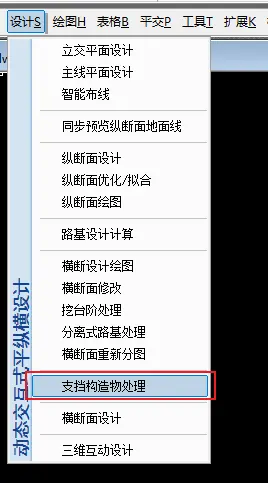
弹出挡墙设计工具：
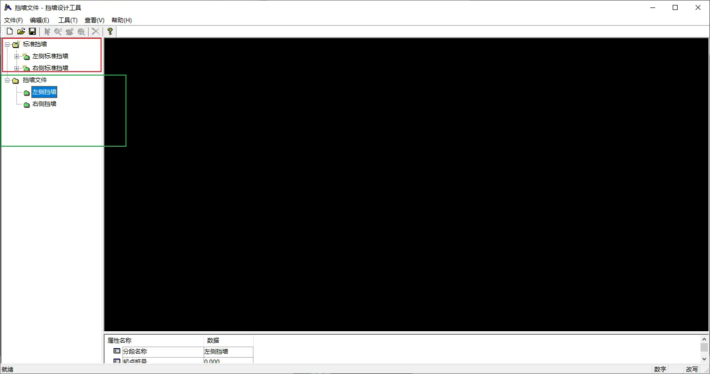
分为标准挡墙和挡墙文件
标准挡墙就是一个标准库，这里面都是画好的模型
挡墙文件是你设计的挡墙段。
首先要从挡墙库中拖拽一个标准图下来
从左侧挡墙库拖到左侧挡墙文件；
从右侧挡墙库拖到右侧挡墙文件。
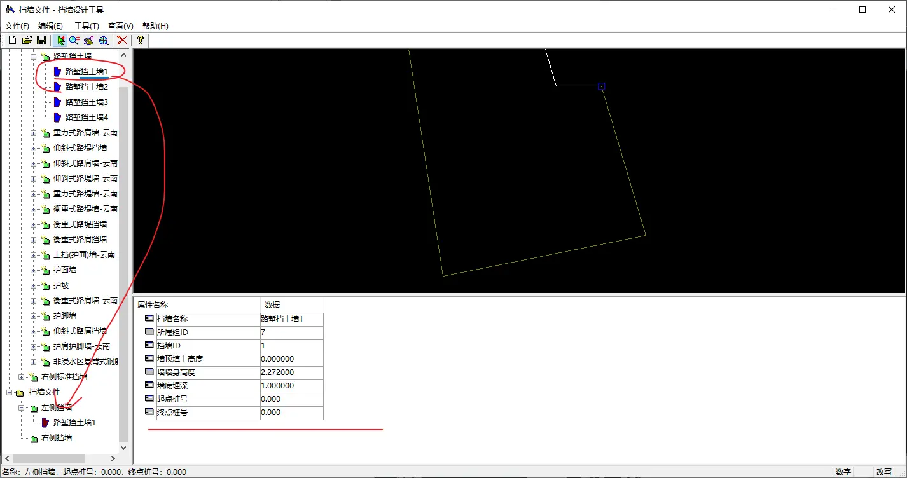
拖到挡墙文件之后，点击那个挡墙文件，设置起始桩号和相关的参数设置。
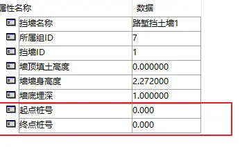
具体的设计请自己查阅资料。